Expression of type ExprTuple¶
from the theory of proveit.physics.quantum¶
In [1]:
import proveit
# Automation is not needed when building an expression:
proveit.defaults.automation = False # This will speed things up.
proveit.defaults.inline_pngs = False # Makes files smaller.
%load_expr # Load the stored expression as 'stored_expr'
# import Expression classes needed to build the expression
from proveit import A, ExprRange, ExprTuple, IndexedVar, P, a, i
from proveit.numbers import one
from proveit.physics.quantum.circuit import MultiQubitGate
In [2]:
# build up the expression from sub-expressions
sub_expr1 = [i, a]
sub_expr2 = [i, one]
expr = ExprTuple([ExprRange(a, MultiQubitGate(IndexedVar(A, sub_expr1), IndexedVar(P, sub_expr1)), one, one)], [MultiQubitGate(IndexedVar(A, sub_expr2), IndexedVar(P, sub_expr2))])
Out[2]:
In [3]:
# check that the built expression is the same as the stored expression
assert expr == stored_expr
assert expr._style_id == stored_expr._style_id
print("Passed sanity check: expr matches stored_expr")
In [4]:
# Show the LaTeX representation of the expression for convenience if you need it.
print(expr.latex())
In [5]:
expr.style_options()
Out[5]:
In [6]:
# display the expression information
expr.expr_info()
Out[6]:
| core type | sub-expressions | expression | |
|---|---|---|---|
| 0 | ExprTuple | 1, 2 | |
| 1 | ExprTuple | 3 | 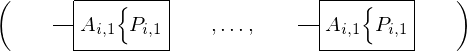 |
| 2 | ExprTuple | 4 | 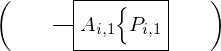 |
| 3 | ExprRange | lambda_map: 5 start_index: 15 end_index: 15 | 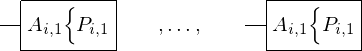 |
| 4 | Operation | operator: 10 operands: 6 | 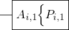 |
| 5 | Lambda | parameter: 20 body: 7 | 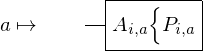 |
| 6 | ExprTuple | 8, 9 | 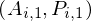 |
| 7 | Operation | operator: 10 operands: 11 | 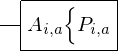 |
| 8 | IndexedVar | variable: 16 indices: 12 | 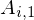 |
| 9 | IndexedVar | variable: 17 indices: 12 | 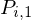 |
| 10 | Literal |  | |
| 11 | ExprTuple | 13, 14 | 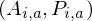 |
| 12 | ExprTuple | 19, 15 | 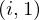 |
| 13 | IndexedVar | variable: 16 indices: 18 | 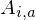 |
| 14 | IndexedVar | variable: 17 indices: 18 | 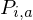 |
| 15 | Literal |  | |
| 16 | Variable |  | |
| 17 | Variable |  | |
| 18 | ExprTuple | 19, 20 | 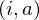 |
| 19 | Variable |  | |
| 20 | Variable |  |